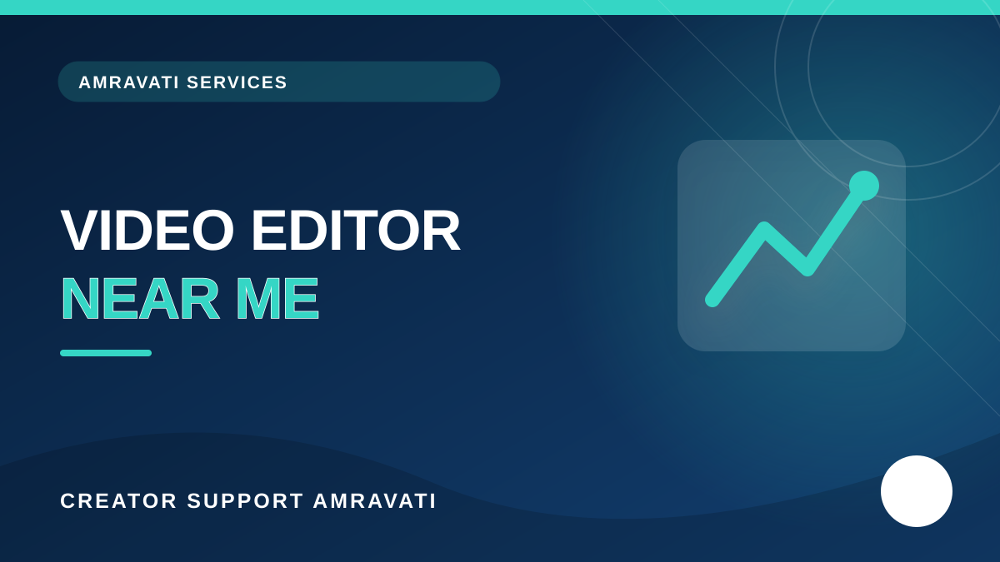
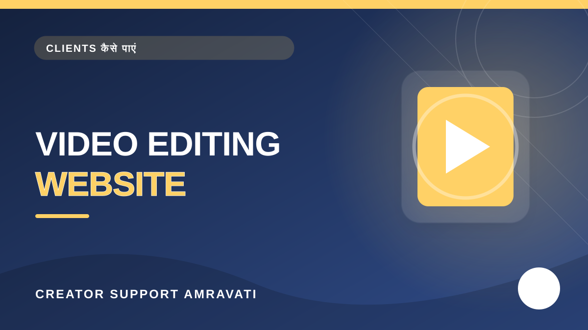
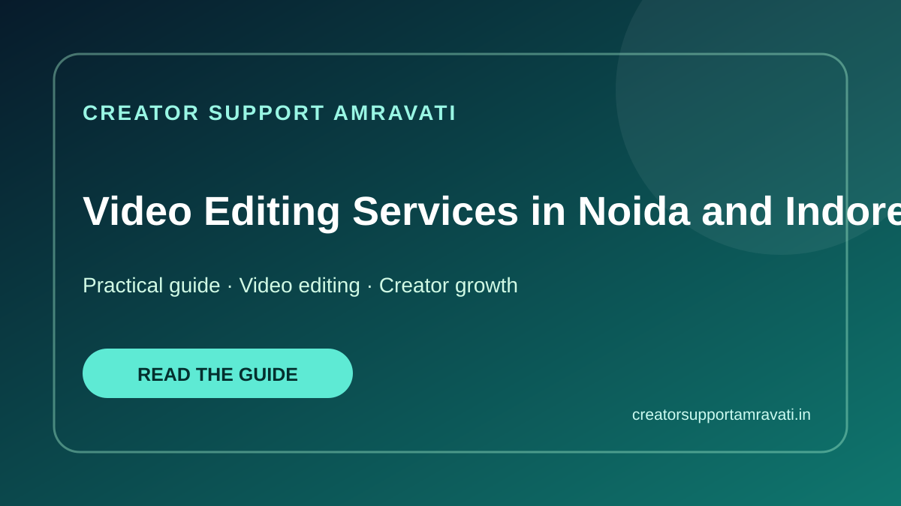
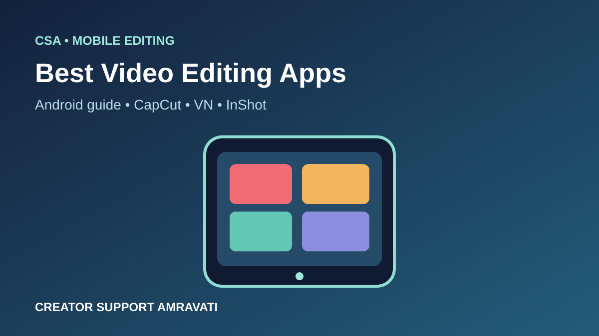
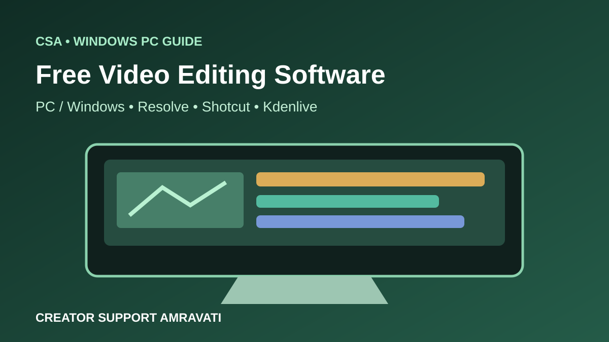
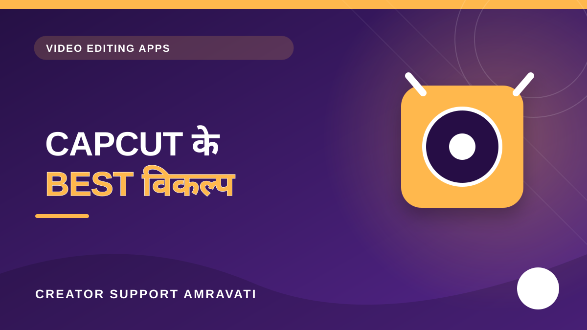
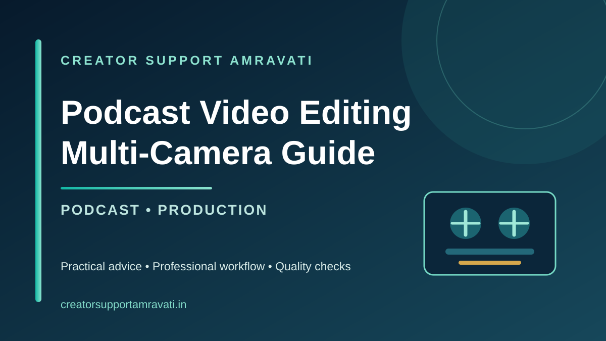
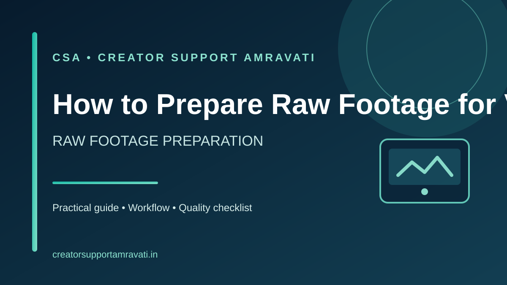

How we prepare these guides
Creator Support Amravati works across video production, editing, podcast recording and digital presence for creators and local businesses. Where relevant, our articles include practical production checklists and lessons from project planning—not promises of guaranteed views, rankings or sales.
Examples are identified as planning examples or CSA project experience where stated. Platform features and policies can change, so readers should verify current requirements through the official references linked in each relevant guide. If you spot an error or have a question, contact our team.

Video Editing Services: A Practical Guide to Hiring the Right Editor in India
Understand professional video editing services for Reels, YouTube, podcasts and business videos, what to share with an editor and how to compare deliverables.
Read article →

GST & SAC Code
Video Editing Services HSN Code in India: Correct SAC Code, Invoice & GST Basics
Learn why video editing is generally classified under SAC for services, what SAC 999613 describes and what to confirm with your GST professional before invoicing.
Read article →

Local Video Editing
Video Editing Services Near Me: How to Find the Right Local Video Editor
Searching for video editing services near me? Compare local editors, check portfolios, discuss revisions and prepare your footage before booking in Amravati or nearby.
Read article →

Poster Design
Video Editing Services Poster Design: Layout, Copy & Call-to-Action Ideas
Create a professional video editing services poster with a clear headline, service list, portfolio proof, contact details and a strong call to action.
Read article →

Website & Business
Video Editing Service Website: Essential Pages, Portfolio & Enquiry Features
Learn what a video editing service website should include: service pages, showreel, pricing guidance, project brief, secure file transfer, FAQs and contact options.
Read article →

Online Editing
Online Video Editing Services in India: How Remote Editing Works
Compare online video editing services in India, prepare files for transfer, brief an editor, manage revisions and protect your footage during remote projects.
Read article →

City & Provider Guide
Video Editing Services in Noida and Indore: How to Compare Local & Online Editors
Searching for video editing services in Noida or Indore? Use this checklist to compare portfolios, local coordination, online workflows and project quotes.
Read article →

Mobile Editing · Android Apps
Best Video Editing Apps for Android in India (2026)
Compare CapCut, VN, InShot, YouCut, Edits and Filmora for Reels, Shorts and everyday video projects.
Read article →

Desktop Editing · Windows PC
Best Free Video Editing Software for PC in 2026
Compare DaVinci Resolve, Shotcut, Kdenlive and Clipchamp, plus PC requirements and performance tips.
Read article →

AI Video Editing · Creator Tools
AI Video Editing Tools: Auto Captions, Cleanup & Clips
Learn where AI helps with captions, transcripts, audio cleanup and turning long videos into short clips.
Read article →

Mobile Editing · App Comparison
CapCut Alternatives in India: VN, InShot & More
Explore practical CapCut alternatives for mobile Reels, Shorts and desktop video editing workflows.
Read article →

Desktop Editing · Software Comparison
Premiere Pro vs DaVinci Resolve in 2026
Compare editing workflow, colour, audio, hardware and cost to choose the right professional video editor.
Read article →

Video Editing · YouTube editing
YouTube Video Editing Workflow
A step-by-step workflow covering footage organisation, story cuts, audio cleanup, B-roll, captions and final export checks.
Read article →

Video Editing · Podcast editing
Podcast Video Editing: Multi-Camera, Audio Sync Aur Short Clips
Understand camera synchronisation, clean dialogue, multicamera cuts, captions, episode chapters and social clips.
Read article →

Video Editing · Raw footage preparation
How to Prepare Raw Footage for Video Editing
Organise original camera files, audio, folders, project notes, permissions and uploads before sending footage to an editor.
Read article →

Video Editing · Reels editing
Instagram Reels Editing Guide: Captions, Vertical Framing Aur Sound
Learn vertical 9:16 framing, readable captions, hooks, pacing, safe zones, sound permissions and mobile quality checks.
Read article →

Video Editing · Hire a video editor
How to Choose a Professional Video Editing Service
Compare portfolio relevance, scope, revisions, turnaround, privacy, rights, communication and delivery terms.
Read article →Customer feedback · Google reviews
How to Read CSA’s Google Review Snapshot: What the Data Shows
A transparent review-led look at feedback on Reel video service, video quality, lighting, team support, pricing clarity and event production.
Read article →

Video Editing · Project planning
Video Editing Charges in India: Cost Factors and Client Checklist
Understand what affects an editing quotation, what to send an editor and how to plan Reels, YouTube and promotional video projects.
Read article →

Instagram Reels · Business
Business Reels Editing: A Practical Brief Before You Hire an Editor
Plan the hook, footage, captions, brand message and delivery format before sending your clips for editing.
Read article →

YouTube · Local business
Local Business ke Liye YouTube Channel Launch Plan
10 practical video ideas, a simple video structure, recording checklist and a realistic 30-day launch workflow.
Read article →

Digital marketing · Local business
Why Every Local Business Needs a Strong Digital Presence
Practical steps for accurate business information, useful photos, customer reviews and a website that helps people enquire.
Read article →

Instagram · Small business
Small Business के लिए Instagram Content Plan: 7 Practical Ideas
Seven repeatable post ideas, a simple weekly rhythm and useful ways to measure enquiries—not just likes.
Read article →

YouTube · Strategy
YouTube Content Strategy और सही Niche कैसे चुनें
Define your audience, choose content pillars, plan a repeatable schedule and use viewer feedback to improve.
Read article →

YouTube · Monetization
YouTube से पैसे कैसे कमाएँ: Monetization के वास्तविक तरीके
Understand YPP, ads revenue, sponsorships, affiliate links and service-based income without unrealistic earning promises.
Read article →

YouTube · SEO
YouTube SEO, Title और Thumbnail: Practical Hindi Guide
Understand search intent, write honest titles, design readable thumbnails and use analytics to improve packaging.
Read article →

YouTube · Beginner guide
YouTube पर शुरुआत कैसे करें: Beginner से Consistent Creator तक
A practical first-month plan for channel setup, recording, editing, publishing and learning from Studio analytics.
Read article →

Video Production · Reels
Business Reels कैसे बनाएं? शूटिंग से Posting तक Practical Guide
Learn how to plan, shoot, edit and publish useful business reels with a phone or camera.
Read article →
Podcast production guide
Podcast Recording & Editing in Amravati: A Complete Planning Guide
Plan a podcast in Amravati with practical guidance on format, microphones, room acoustics, camera angles, editing, publishing and production briefs.
Read article →

Website planning guide
Website Development Cost in Amravati: What Businesses Should Plan For
Understand website development cost factors in Amravati, from domain and hosting to pages, forms, content, maintenance and launch checks.
Read article →

Social media strategy
Social Media Management for Small Businesses in Amravati
Build a practical social media management plan for a local business: goals, content pillars, posting workflow, approvals and enquiry measurement.
Read article →

Local SEO guide
Google Business Profile & Local SEO: A Practical Guide for Amravati Businesses
A practical local SEO guide for Amravati businesses covering Google Business Profile accuracy, service pages, reviews, photos and enquiry tracking.
Read article →

Studio setup guide
Studio Setup & Camera Equipment Rental: A Practical Creator Checklist
Plan a home or podcast studio and camera equipment rental with a practical checklist for audio, lighting, power, storage, safety and handover.
Read article →
Branding · Video Marketing
Brand Awareness Video क्या है? Local Business के लिए Strategy, Shoot और Promotion Guide
A practical guide for local businesses to plan authentic brand awareness videos, tell a clear story, produce platform-ready edits and evaluate campaign performance.
Read article →
Website · SEO
Small Business Website SEO Basics: Google Search के लिए Step-by-Step Guide
A practical Hindi checklist for small businesses covering page structure, titles, mobile usability, internal links, image accessibility, sitemap and Search Console.
Read article →
YouTube · Video Planning
YouTube Video Planning Checklist: Shoot से पहले 10 जरूरी Steps
A complete pre-production workflow for creators: audience, hook, outline, script, audio, camera, lighting, files, thumbnail and post-publish review.
Read article →